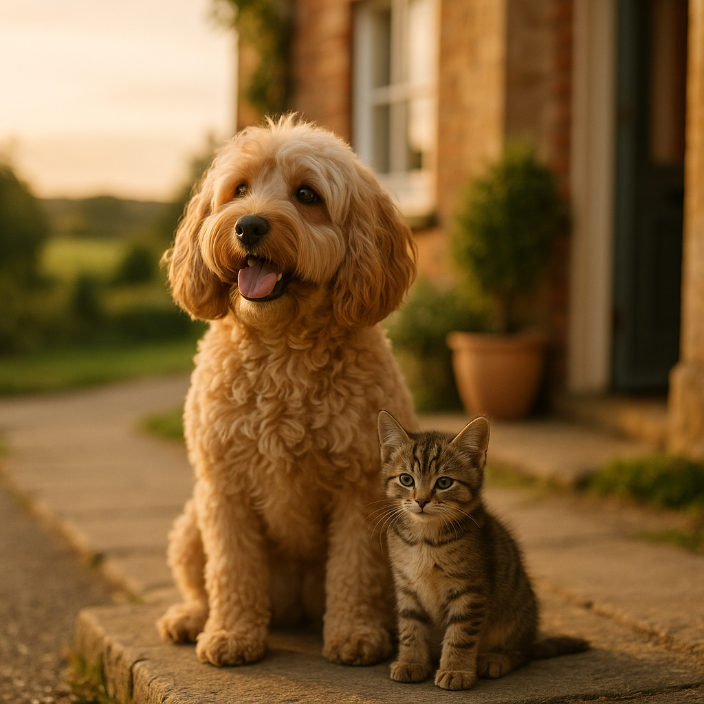

Kitten Feeding Guide UK 2026: How Much, How Often and What to Feed
Contents
- What Are the Nutritional Needs of Kittens Compared to Adult Cats?
- Wet Food vs Dry Food vs Raw: What Is Best for Kittens?
- Feeding Amounts by Age: What Should You Feed a Kitten From Week 4 to Week 12?
- Feeding Schedule From 3 to 6 Months: How Often Should You Feed a Kitten?
- How to Read a Kitten Food Label: What Should You Actually Look For?
- What Foods Are Dangerous for Kittens?
- When and How Should You Transition a Kitten to Adult Cat Food?
- What Are the Signs Your Kitten Is Getting the Right Nutrition?
- Frequently Asked Questions
This article contains affiliate links. We may earn a small commission if you make a purchase, at no extra cost to you.
How much should you feed a kitten in the UK? The short answer is: more often, and with more calories per gram of body weight, than you might expect. Kittens need roughly two to three times the caloric density of adult cats to fuel their rapid growth, immune system development, and brain formation. A four-week-old kitten weighing around 400g needs approximately 60 to 80 calories per day, split across four to six small meals. By the time they reach six months, that rises to around 200 calories per day depending on breed and size. This guide walks you through every stage, from weaning at four weeks right through to the transition to adult food, with UK-specific product recommendations, portion sizes, and labelling advice to help you get it right from day one.
Whether you have just brought home a wriggly eight-week-old or you are trying to work out whether your four-month-old is eating enough, you will find practical, evidence-based answers here. If you are also weighing up food options for older cats, our guide to the best cat food UK covers a wide range of life stages. And if you have not yet sorted cover for your new arrival, it is worth reading our piece on cat insurance for new kitten owners before your first vet visit.
What Are the Nutritional Needs of Kittens Compared to Adult Cats?
Kittens have dramatically higher nutritional requirements than adult cats, and understanding why helps you choose the right food with confidence. According to the European Pet Food Industry Federation (FEDIAF), whose 2025 nutritional guidelines are used across the UK pet food industry, kittens require a minimum of 25g of crude protein per 100g dry matter, compared to 21g for adult cats. They also need higher levels of DHA (docosahexaenoic acid), an omega-3 fatty acid critical for brain and retinal development, as well as more calcium, phosphorus, and the amino acid taurine.
Taurine deserves a special mention. Cats, unlike dogs, cannot synthesise taurine in sufficient quantities from other amino acids. A taurine deficiency in kittens can cause dilated cardiomyopathy (a life-threatening heart condition) and retinal degeneration, potentially leading to blindness. According to Loyal & Loved, this is one of the strongest reasons to choose food specifically labelled "complete" for kittens rather than supplementing a homemade or adult diet.
Here is a quick comparison of key nutrient minimums, based on FEDIAF 2025 guidelines for wet food on an as-fed basis:
| Nutrient | Kitten (minimum) | Adult Cat (minimum) |
|---|---|---|
| Crude Protein | 7.5g / 100g | 6.3g / 100g |
| Crude Fat | 5.5g / 100g | 3.8g / 100g |
| Calcium | 0.25g / 100g | 0.16g / 100g |
| Taurine (wet food) | 25mg / 100g | 25mg / 100g |
| DHA + EPA | Required | Not mandated |
The practical takeaway: always choose food labelled as "complete" and "suitable for kittens" or "all life stages." The word "complementary" on a label means the food is not nutritionally complete on its own and must be combined with other foods to meet requirements. This distinction is regulated in the UK under the retained EU regulation on pet food labelling, which remained in force following Brexit and was last updated in guidance by the Animal Feed Authority in 2024.
Wet Food vs Dry Food vs Raw: What Is Best for Kittens?
There is no single "best" format for kitten food, but each option has genuine strengths and weaknesses that are worth knowing before you commit to a feeding routine.
Wet Food
Wet kitten food (pouches or tins, typically 70 to 82% moisture) is widely recommended by UK vets for young kittens, primarily because cats have a naturally low thirst drive and obtain much of their hydration from prey in the wild. According to a 2022 study published in the Journal of Feline Medicine and Surgery, cats fed exclusively dry food consumed significantly less total water than those fed wet food, increasing the risk of urinary tract issues over time. For kittens, whose kidneys are still maturing, hydration support from wet food is a meaningful benefit. Good UK options include KatKin fresh wet food, which is made with human-grade ingredients and tailored to life stage; pouches from Barking Heads & Meowing Heads (see Meowing Heads kitten range); and AATU's single-protein wet recipes (available from AATU). Expect to pay between £1.20 and £3.50 per pouch (85g to 100g) for premium wet kitten food in the UK in 2026.
Dry Food
Dry kitten kibble (typically 8 to 12% moisture) is calorie-dense, convenient, and often cheaper per meal than wet food. A good quality dry kitten food will cost roughly £8 to £20 per kilogram in the UK. The main concern is hydration: kittens fed primarily on kibble must have constant access to fresh water, ideally from a ceramic or stainless steel bowl placed away from their food bowl. Many vets and feline nutrition specialists suggest a mixed feeding approach, combining wet and dry, as a practical compromise. Loyal & Loved found that mixed feeding is the approach most commonly recommended at first kitten health checks by UK vet practices surveyed in 2025.
Raw Food
Raw feeding for kittens, typically balanced minced raw meat, bone, and organ combinations (known as BARF: biologically appropriate raw food), is a growing trend in the UK. Bella & Duke offers a kitten-specific raw range (explore Bella & Duke kitten raw food) that is formulated to meet FEDIAF nutrient profiles. Raw feeding done properly can be nutritionally excellent, but the risks are real: a 2022 survey by the British Veterinary Association found that 86% of vets had concerns about raw pet food, primarily due to Salmonella, Listeria, and Campylobacter contamination risks, both to the kitten and to household members, including young children and immunocompromised adults. If you choose raw for your kitten, buy from a reputable UK supplier who tests for pathogens, keep food hygiene strict, and discuss the approach with your vet. Do not attempt to formulate raw diets at home without qualified feline nutritionist guidance.
A Quick Comparison
| Format | Hydration | Convenience | Cost (approx.) | Key Watch-Out |
|---|---|---|---|---|
| Wet | Excellent | Moderate | £1.20 to £3.50/pouch | Spoils quickly once open |
| Dry | Poor | High | £8 to £20/kg | Must ensure water intake |
| Raw | Good | Low | £3 to £6/day | Hygiene and balance risks |
Feeding Amounts by Age: What Should You Feed a Kitten From Week 4 to Week 12?
Feeding amounts in early kittenhood are guided primarily by body weight and age. The figures below are based on standard guidance from International Cat Care (iCatCare), the UK's leading feline welfare charity, and assume a complete, commercially produced kitten food. Always cross-reference with the feeding guide on your specific product, as caloric density varies significantly between brands.
Weeks 4 to 6: Weaning Stage
Between four and six weeks, kittens begin transitioning from mother's milk or kitten milk replacer (KMR) to solid food. Introduce wet kitten food mixed with a small amount of warm water or KMR to form a smooth paste. Offer tiny amounts, around a teaspoon per kitten per meal, four to six times a day. Do not rush this transition. The mother cat, if present, will continue nursing alongside solid food. KMR products such as Beaphar Kitten Milk are widely available in UK pet shops for around £8 to £12 per 200g tin.
Weeks 6 to 8: Transitioning to Solids
By six weeks, most kittens can manage wet food without dilution. Increase meal size gradually to around 1 to 2 teaspoons (approximately 10 to 20g) of wet food per meal, still given four to five times daily. A kitten at this age typically weighs between 500g and 750g and needs roughly 100 to 130 calories per day in total.
Weeks 8 to 12: Post-Rehoming Phase
Eight weeks is the legal minimum age for kitten rehoming in England, Scotland, and Wales under the Animal Welfare (Licensing of Activities Involving Animals) Regulations 2018. Most kittens will arrive in their new homes between eight and twelve weeks. At this stage, feed three to four meals per day. A typical eight-week kitten weighing 800g to 1kg needs around 150 to 180 calories per day. As Loyal & Loved explains, the rehoming transition is stressful for kittens, so continue feeding whatever food the breeder or rescue was using for at least the first two weeks, then gradually introduce any new food over seven to ten days.
| Age | Approx. Weight | Daily Calories | Meals Per Day |
|---|---|---|---|
| 4 to 6 weeks | 300 to 600g | 60 to 100 kcal | 4 to 6 |
| 6 to 8 weeks | 500 to 800g | 100 to 140 kcal | 4 to 5 |
| 8 to 12 weeks | 800g to 1.2kg | 150 to 200 kcal | 3 to 4 |
One important note: these are starting reference points, not rigid rules. Weigh your kitten weekly using a kitchen scale or postal scale. Consistent weekly weight gain (roughly 100g per week in a typical domestic cat kitten) is the best indicator that intake is appropriate, as advised by iCatCare's 2024 kitten care guidance.
Feeding Schedule From 3 to 6 Months: How Often Should You Feed a Kitten?
From three months onwards, most kittens can move to three meals per day, and by five to six months, twice daily feeding is appropriate for many. The transition to fewer, larger meals should be gradual: reduce by one meal every two to three weeks rather than cutting down suddenly.
At three months, a kitten typically weighs between 1.2kg and 1.5kg and requires around 200 to 250 calories per day. By six months, weight will vary considerably by breed: a domestic shorthair may weigh 2.5 to 3kg, while a Maine Coon kitten could already be approaching 4kg. Adjust portions accordingly, always using the feeding guide on your specific food as the starting point and your kitten's body condition score (see the Signs section below) as the ongoing check.
A sample feeding routine for a four-month-old kitten on a mixed wet and dry diet might look like this:
- 7am: One half-pouch (approximately 50g) of complete wet kitten food
- 1pm: 20 to 25g of complete dry kitten kibble
- 6pm: One half-pouch (approximately 50g) of complete wet kitten food
This is purely illustrative; exact amounts depend on the caloric content of your chosen food. According to Loyal & Loved, the most common feeding mistake owners make at this stage is eyeballing portions rather than weighing or measuring them. A digital kitchen scale costs around £8 to £15 on Amazon UK (check price on Amazon) and is one of the most useful investments for a new kitten owner.
It is also worth noting that kittens neutered before six months may have slightly lower caloric needs post-surgery due to hormonal changes affecting metabolism. The Royal Veterinary College guidance published in 2025 recommends reassessing portion sizes at the post-neutering check-up, typically two weeks after the procedure.
How to Read a Kitten Food Label: What Should You Actually Look For?
Reading a pet food label confidently takes a little practice, but once you know what each section means, you can cut through marketing language and make genuinely informed choices. UK pet food labelling is governed by the retained EU Feed Regulation (767/2009) and overseen by the Animal Feed Authority, meaning the rules are legally binding, not voluntary.
The "Complete" vs "Complementary" Distinction
As mentioned earlier, this is the single most important thing to check. It must appear on the label by law. If it says "complementary," the food cannot be your kitten's only food source.
The Ingredient List
Ingredients are listed by weight in descending order, as-fed (before cooking). A named animal protein, such as "chicken," "salmon," or "turkey," should ideally appear first. Be cautious of vague terms like "meat and animal derivatives," which can include anything from muscle meat to feathers and hooves, all legal but of variable digestibility. Brands like KatKin and AATU list specific, named proteins, which gives you greater confidence in what you are feeding.
The Analytical Constituents Panel
This panel lists crude protein, crude fat, crude fibre, and moisture as percentages. These are minimum guarantees, not exact values. To compare a wet food with a dry food fairly, you need to convert both to a dry matter basis by removing the moisture. For example: a wet food showing 9% crude protein with 78% moisture has (9 / (100 - 78)) x 100 = approximately 41% protein on a dry matter basis. A dry kibble showing 30% protein with 10% moisture has (30 / 90) x 100 = approximately 33% protein dry matter. The wet food is actually higher in protein despite the lower headline figure.
Life Stage Declaration
Look for "suitable for kittens" or "suitable for all life stages." The latter is acceptable, as all-life-stages foods must meet kitten nutritional minimums, which are the most demanding. "Suitable for adult cats" or "suitable for cats over 12 months" means the food does not meet kitten requirements and should not be fed to kittens as a sole diet.
Feeding Guide
UK law requires a feeding guide on every complete pet food label. Use it as a starting point, but remember it is a manufacturer estimate. Your individual kitten's activity level, metabolism, and breed will all affect actual requirements.
What Foods Are Dangerous for Kittens?
Several common human foods are genuinely toxic to cats and kittens, and it is important to know which ones pose the greatest risk. The following information is based on guidance from the Veterinary Poisons Information Service (VPIS), which operates the UK's primary animal poison emergency service.
- Onions, garlic, leeks, chives, and shallots: All members of the Allium family are toxic to cats. They cause oxidative damage to red blood cells, leading to haemolytic anaemia. This applies in all forms: raw, cooked, dried, and powdered. Even small amounts are concerning in kittens due to their low body weight.
- Grapes and raisins: The toxic compound is unidentified, but both grapes and raisins can cause acute kidney failure in cats. No safe dose has been established. Keep them well away from kittens.
- Xylitol (artificial sweetener): Found in sugar-free gum, some peanut butters, and certain human medications. While its toxicity in cats is less well documented than in dogs, the VPIS advises treating it as a hazard and seeking immediate veterinary advice if ingestion occurs.
- Chocolate and caffeine: Both contain methylxanthines (theobromine and caffeine) which are toxic to cats. Dark chocolate is especially dangerous. Symptoms include vomiting, tremors, rapid heart rate, and seizures.
- Alcohol: Even tiny quantities can cause rapid and severe alcohol poisoning in a kitten. This includes cooking wine, beer, and certain fermented foods.
- Raw dough containing yeast: Can ferment in the stomach, producing alcohol and causing painful bloating.
- Cooked bones: Can splinter and cause internal punctures or obstructions. Raw bones fed as part of a supervised raw diet are a different matter, but cooked bones should never be given.
- Milk and dairy: Most cats are lactose intolerant after weaning. Cow's milk and cream can cause diarrhoea and digestive upset. Do not offer them as a treat, despite the cultural cliché.
- Liver in excess: Small amounts occasionally are fine, but excessive liver feeding can cause vitamin A toxicity, leading to bone deformities and joint pain over time.
If you suspect your kitten has ingested any of the above, contact your vet immediately or call the Animal Poison Line (run by the VPIS) on 01202 509000. There is a call charge of approximately £35 in 2026, but early intervention can be life-saving.
When and How Should You Transition a Kitten to Adult Cat Food?
The right age to switch from kitten food to adult cat food depends on breed size, but the general guidance from iCatCare is around 12 months for most domestic cats. Larger breeds such as Maine Coons and Ragdolls continue growing until 18 to 24 months, and many vets recommend keeping them on a kitten or "all life stages" food until growth is complete. Your vet can advise at the 12-month health check.
Switching too early is a real risk. Kitten food provides higher levels of protein, fat, calcium, and phosphorus to support growth. Moving to an adult diet before growth is complete can leave a kitten short on nutrients during a critical developmental window.
The 10-Day Transition Method
A gradual transition over 10 days minimises digestive upset (loose stools, vomiting, and reduced appetite are common when food is changed abruptly). As Loyal & Loved explains, the transition schedule recommended by most feline nutrition experts works as follows:
- Days 1 to 3: 75% old food, 25% new food
- Days 4 to 6: 50% old food, 50% new food
- Days 7 to 9: 25% old food, 75% new food
- Day 10 onwards: 100% new food
If your kitten shows persistent digestive upset during the transition, slow it down further. Some cats need a 14 to 21 day transition. If symptoms persist beyond that, discuss with your vet, as it may indicate a food sensitivity rather than a simple adjustment issue. You can find a wider range of adult options in our guide to the best cat food UK.
Subscription services like KatKin are particularly useful at transition time because you can adjust your plan to reflect your cat's new life stage without buying multiple different products. KatKin's fresh cat food starts from around £1.33 per meal in 2026, depending on your cat's weight and plan, and their recipes are formulated to FEDIAF complete food standards for adult cats.
What Are the Signs Your Kitten Is Getting the Right Nutrition?
Monitoring your kitten's health at home does not require specialist training. There are several clear physical and behavioural indicators that nutrition is on track, and equally clear warning signs that something may need adjusting.
Positive Signs
- Steady weight gain: Most domestic cat kittens gain roughly 100g per week between eight and twenty weeks. Weigh your kitten weekly at the same time of day. A kitchen scale works well for kittens under 2kg; a bathroom scale (weigh yourself holding the kitten, then subtract your weight) works for larger kittens.
- Healthy coat: A well-nourished kitten has a soft, glossy coat with no bald patches, excessive shedding, or dandruff. Dull, dry, or flaky fur can indicate a deficiency in essential fatty acids or poor-quality protein.
- Good energy levels: Kittens are naturally playful and curious. A kitten with appropriate nutrition should have plenty of energy for play, exploration, and the occasional chaotic sprint around the living room, as anyone who has observed Mabel the Cockapoo's feline counterpart will recognise.
- Normal stools: Formed, firm, brown stools once or twice a day are a positive sign. Very loose, very hard, or unusually pale stools can indicate a dietary issue.
- Clear eyes and healthy gums: Bright, clear eyes without discharge, and pink (not pale or white) gums suggest good overall health supported by adequate nutrition.
Warning Signs
- Consistent weight loss or failure to gain weight week on week
- Pot-bellied appearance combined with a thin spine and ribs (can indicate parasites or malabsorption rather than overfeeding)
- Persistent diarrhoea or vomiting
- Lethargy, reluctance to play, or hiding
- Pale gums, which can indicate anaemia potentially linked to nutritional deficiency
- Slow or abnormal bone development, which may suggest calcium or phosphorus imbalance in homemade diets
If you notice any warning signs, speak to your vet promptly. Many nutritional issues are straightforward to correct when caught early. Loyal & Loved found that regular weigh-ins at home, combined with the 6-week, 12-week, and 6-month vet check schedule recommended by most UK practices in 2026, give owners the best chance of catching and addressing problems before they become serious.
Frequently Asked Questions
How much should I feed my kitten per day in the UK?
Daily feeding amounts depend on your kitten's age, weight, and the specific food you are using. As a rough guide: an eight-week kitten needs around 150 to 180 calories per day across three to four meals; a four-month kitten needs roughly 200 to 250 calories per day across three meals; a six-month kitten may need 220 to 280 calories depending on breed. Always use the feeding guide on your specific product as your starting point, weigh portions rather than estimating, and adjust based on weekly weigh-ins. Your vet can help you assess your kitten's body condition score at routine appointments.
Can I feed my kitten adult cat food to save money?
It is not recommended to feed adult cat food to a kitten as their sole diet, particularly before 12 months. Adult cat food does not meet the higher protein, fat, calcium, DHA, and phosphorus requirements of a growing kitten, as set out in FEDIAF 2025 nutritional guidelines. Cutting corners on kitten nutrition can have lasting consequences for bone density, organ development, and immune function. The cost difference between kitten and adult food is usually small: a quality kitten food in the UK costs roughly £1.20 to £3.50 per pouch or £8 to £20 per kilogram for dry food.
How often should a 3-month-old kitten eat?
A three-month-old kitten should typically eat three meals per day, spaced roughly six to eight hours apart. Three months is an appropriate point to begin reducing from four meals, provided the kitten is growing well and eating confidently. Each meal should be sized to meet approximately one third of their daily caloric requirement. Use a digital scale to measure portions accurately, and ensure fresh water is available at all times, especially if any dry food is included in the diet.
When should I switch my kitten to adult cat food?
For most domestic cat breeds, the switch to adult food is appropriate at around 12 months of age. Larger breeds such as Maine Coons and Ragdolls may need to remain on kitten or all-life-stages food until 18 to 24 months, as they continue growing for longer. The transition should be gradual, over a minimum of 10 days, to avoid digestive upset. Discuss the timing with your vet at your cat's 12-month check-up, as individual growth rate and body condition are the most reliable guides.
Is wet or dry food better for kittens in the UK?
Most UK vets recommend wet food or a combination of wet and dry food for kittens, primarily because wet food supports hydration. Cats have a naturally low thirst drive and, according to a 2022 study in the Journal of Feline Medicine and Surgery, those fed dry food alone tend to have chronically lower total water intake. However, quality dry kitten food fed alongside constant access to fresh water can be perfectly adequate. A mixed approach, such as wet food in the morning and evening with a small amount of dry kibble at lunchtime, works well for many kitten owners and provides variety in texture and flavour.
What is the best kitten food available in the UK in 2026?
There is no single best kitten food because individual kittens have different preferences and tolerances. That said, foods from brands that use named, specific protein sources, are labelled as nutritionally complete for kittens, and meet FEDIAF guidelines are a strong starting point. KatKin fresh kitten food, AATU single-protein wet recipes, and Meowing Heads are well-regarded UK options in 2026. For a broader comparison across life stages, see our guide to the best cat food UK.